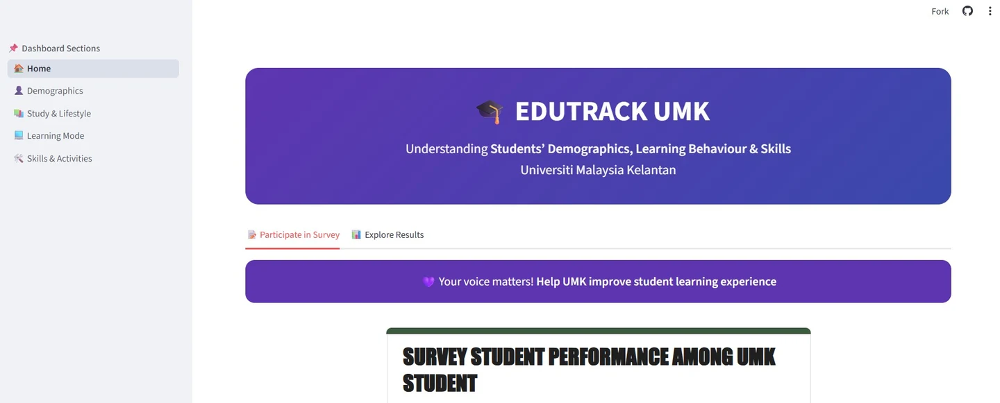

PROJECT 02 / Data Mining
EduTrack Analytics Dashboard
A Streamlit-based analytics dashboard for exploring and visualizing education-related data insights.

01 / Project focus
Exploring education-related data through a focused dashboard.
A Streamlit-based analytics dashboard for exploring and visualizing education-related data insights.
02 / My work & documented scope
From idea to interface.
Built a Streamlit-based analytics dashboard for exploring and visualizing education-related data insights.
03 / What it includes
A closer look.
- Education-related data exploration
- Data visualization in a Streamlit dashboard
04 / Project status
Analytics dashboard.
An education analytics dashboard with an existing live project link.
View live project